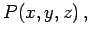
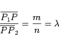
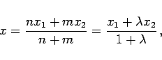
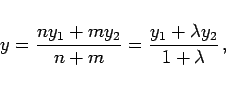
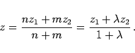
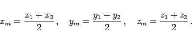
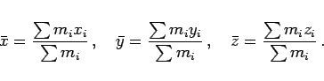

Inhalt Index DeskTop Bronstein

 Geometrie Vektoralgebra und analytische Geometrie Analytische Geometrie des Raumes Grundlegende Begriffe und Formeln, räumliche Koordinatensysteme
Geometrie Vektoralgebra und analytische Geometrie Analytische Geometrie des Raumes Grundlegende Begriffe und Formeln, räumliche Koordinatensysteme


Die Koordinaten eines Punktes  der eine Strecke zwischen den Punkten  und
und  im vorgegebenen Verhältnis
im vorgegebenen Verhältnis
|  | (3.385) |
teilen soll, werden mit den Formeln
|  | (3.386a) |
|  | (3.386b) |
|  | (3.386c) |
bestimmt (s. auch Teilung einer Strecke in der Ebene). Der Mittelpunkt der Strecke ergibt sich aus
|  | (3.387) |
Die Koordinaten des Massenmittelpunktes (oft unkorrekterweise Schwerpunkt genannt) eines Systems aus n materiellen Punkten mit den Massen mi werden mit den folgenden Formeln berechnet, wobei die Summation über alle i von 1 bis n zu erfolgen hat:
|  | (3.388) |